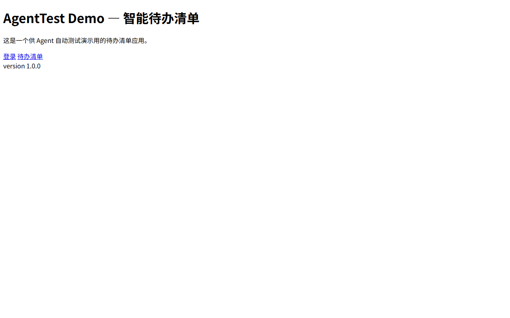

🐞 发现的缺陷（Agent 归因）
DEF-001 创建待办接口未校验 title：空 title 被放行创建、超长 title 未做长度边界校验 high / contract
端点：POST /api/todos
证据：API-006：空 title 期望 400，实际 200 并创建 id=4（title='(empty)'，仅返回 warning）；API-007：256 字符 title 期望 400，实际 201 创建 id=5。
建议：在请求校验层对 title 做必填 + 非空白 + 最大长度（如 1~200 字符）校验，非法时返回 400 与明确错误码/字段信息，而不是降级为 '(empty)' 或截断后创建。
关联用例：API-006, API-007
DEF-002 GET /api/todos 对非法 status 过滤值未做入参校验，直接抛 500 内部错误 high / bug
端点：GET /api/todos
证据：非法 status 期望 400，实际 500 {'error': 'internal error: unexpected status filter'}，重试 3 次稳定复现。
建议：对 status 参数做枚举白名单校验（active/completed 等），非法值返回 400 并说明允许取值；同时避免把内部异常信息透出到响应体。
关联用例：API-009
DEF-003 RAG 检索索引与语料不同步：同一 doc_id 重复召回、删除后仍命中陈旧索引，且结果 score 非单调 critical / relevance
端点：GET /api/rag/search
证据：RAG-001：hits=['doc_alpha','doc_alpha'] 重复 doc_id；RAG-002：删除 DOC-PROBE-TMP 后仍召回 ghost hit，index_size=13 != corpus_size=12；RAG-003：rank2 score=1.799646 < rank3 score=2.357254，排序非降序。
建议：写入/删除时按 doc_id 做幂等 upsert 与 delete（避免重复条目），删除后同步刷新索引并校验 index_size 与语料一致；检索结果按 doc_id 去重后统一按 score 降序排序再截断 top_k；补充索引一致性自检与回归用例。
关联用例：RAG-001, RAG-002, RAG-003
DEF-004 RAG 检索空查询未按契约返回 400，而是返回 200 空结果 medium / contract
端点：GET /api/rag/search
证据：q= 空查询期望 400，实际 200 hits=[] recall@5=0。
建议：对 q 做非空/最小长度校验，空或纯空白时返回 400 并给出参数错误说明。
关联用例：RAG-004
DEF-005 首页未渲染待办列表容器，页面缺少 Todo 文案与 #todo-list 元素 high / bug
端点：GET / (http://127.0.0.1:5001/)
证据：期望页面包含 'Todo' 文本与 #todo-list 元素；实际 DOM 仅有标题、简介、登录入口与版本号，元素不存在，重试 3 次稳定失败。
建议：确认首页模板是否漏渲染待办列表组件（或列表依赖登录态/异步加载失败），补齐 #todo-list 容器与列表渲染逻辑，并保证未登录时也有可见容器或明确空态。
关联用例：UI-001
📋 用例执行明细
| ID | 标题 | 类型 | 期望 | 实际 | 结果 | 耗时 | 备注 |
|---|---|---|---|---|---|---|---|
| API-001 | 健康检查返回 200 | api | 200 | 200 {'status': 'ok', 'time': '2026-10-23T05:18:53.493428+00:00', 'version': '1.0.0'} | PASS | 21ms |
请求 GET /api/health -> 200，响应体: {'status': 'ok', 'time': '2026-10-23T05:18:53.493428+00:00', 'version': '1.0.0'}
|
| API-002 | 正确凭据登录成功并返回 token | api | 200 | 200 {'token': 'demo-token-123', 'user': 'admin'} | PASS | 15ms |
请求 POST /api/login -> 200，响应体: {'token': 'demo-token-123', 'user': 'admin'}
|
| API-003 | 错误密码登录返回 401 | api | 401 | 401 {'error': 'invalid credentials'} | PASS | 15ms |
请求 POST /api/login -> 401，响应体: {'error': 'invalid credentials'}
|
| API-004 | 登录缺少 password 字段返回 400 | api | 400 | 400 {'error': 'username and password are required'} | PASS | 15ms |
请求 POST /api/login -> 400，响应体: {'error': 'username and password are required'}
|
| API-005 | 创建待办返回 201 | api | 201 | 201 {'data': {'created_at': '2026-10-23T05:18:53.555980+00:00', 'id': 3, 'priority': 'high', 'status': 'active', 'title' | PASS | 16ms |
请求 POST /api/todos -> 201，响应体: {'data': {'created_at': '2026-10-23T05:18:53.555980+00:00', 'id': 3, 'priority': 'high', 'status': 'active', 'title': 'buy milk'}}
|
| API-006 | 创建待办缺少 title 返回 400 | api | 400 | 200 {'data': {'created_at': '2026-10-23T05:18:53.571980+00:00', 'id': 4, 'priority': 'high', 'status': 'active', 'title' | FAIL | 15ms |
期望状态码 400，实际 200
请求 POST /api/todos -> 200，响应体: {'data': {'created_at': '2026-10-23T05:18:53.571980+00:00', 'id': 4, 'priority': 'high', 'status': 'active', 'title': '(empty)'}, 'warning': 'created with empty title'}
|
| API-007 | 创建待办 title 为超长字符串（256 字符）边界校验 | api | 400 | 201 {'data': {'created_at': '2026-10-23T05:18:53.588025+00:00', 'id': 5, 'priority': 'low', 'status': 'active', 'title': | FAIL | 15ms |
期望状态码 400，实际 201
请求 POST /api/todos -> 201，响应体: {'data': {'created_at': '2026-10-23T05:18:53.588025+00:00', 'id': 5, 'priority': 'low', 'status': 'active', 'title': 'AAAAAAAAAAAAAAAAAAAAAAAAAAAAAAAAAAAAAAAAAAAAAAAAAAA
|
| API-008 | 查询待办列表返回 200 | api | 200 | 200 {'count': 5, 'data': [{'created_at': '2026-10-23T05:18:42.192138+00:00', 'id': 1, 'priority': 'high', 'status': 'act | PASS | 2ms |
请求 GET /api/todos -> 200，响应体: {'count': 5, 'data': [{'created_at': '2026-10-23T05:18:42.192138+00:00', 'id': 1, 'priority': 'high', 'status': 'active', 'title': '学习 LangGraph 状态图'}, {'created_at': '20
|
| API-009 | 按非法 status 过滤待办返回 400 | api | 400 | 500 {'error': 'internal error: unexpected status filter'} | FAIL | 939ms |
期望状态码 400，实际 500
已重试 2 次
请求 GET /api/todos -> 500，响应体: {'error': 'internal error: unexpected status filter'}
|
| API-010 | 查询不存在的待办返回 404 | api | 404 | 404 {'error': 'todo not found'} | PASS | 16ms |
请求 GET /api/todos/999999 -> 404，响应体: {'error': 'todo not found'}
|
| API-011 | 更新待办状态为 done 返回 200 | api | 200 | 200 {'data': {'created_at': '2026-10-23T05:18:42.192138+00:00', 'id': 1, 'priority': 'high', 'status': 'done', 'title': | PASS | 15ms |
请求 PATCH /api/todos/1 -> 200，响应体: {'data': {'created_at': '2026-10-23T05:18:42.192138+00:00', 'id': 1, 'priority': 'high', 'status': 'done', 'title': '学习 LangGraph 状态图'}}
|
| API-012 | 更新待办为非法状态返回 400 | api | 400 | 400 {'error': 'invalid status'} | PASS | 14ms |
请求 PATCH /api/todos/1 -> 400，响应体: {'error': 'invalid status'}
|
| API-013 | 更新不存在待办返回 404 | api | 404 | 404 {'error': 'todo not found'} | PASS | 16ms |
请求 PATCH /api/todos/999999 -> 404，响应体: {'error': 'todo not found'}
|
| API-014 | 删除待办返回 204 | api | 204 | 204 | PASS | 15ms |
请求 DELETE /api/todos/1 -> 204，响应体:
|
| API-015 | 删除不存在待办返回 404 | api | 404 | 404 {'error': 'todo not found'} | PASS | 2ms |
请求 DELETE /api/todos/999999 -> 404，响应体: {'error': 'todo not found'}
|
| API-016 | 待办统计返回 200 | api | 200 | 200 {'active': 3, 'done': 1, 'total': 4} | PASS | 12ms |
请求 GET /api/stats -> 200，响应体: {'active': 3, 'done': 1, 'total': 4}
|
| API-017 | 不稳定接口重试后最终成功（10% 503 场景） | api | 200 | 200 {'flaky': True, 'ok': True} | PASS | 15ms |
请求 GET /api/flaky -> 200，响应体: {'flaky': True, 'ok': True}
|
| API-018 | RAG 索引元信息返回 200 且含 backend 字段 | api | 200 | 200 {'backend': 'bm25', 'doc_ids': ['DOC-CN-001', 'DOC-CN-002', 'DOC-CN-003', 'DOC-CN-004', 'DOC-CN-005', 'DOC-EN-001', | PASS | 2ms |
请求 GET /api/rag/index -> 200，响应体: {'backend': 'bm25', 'doc_ids': ['DOC-CN-001', 'DOC-CN-002', 'DOC-CN-003', 'DOC-CN-004', 'DOC-CN-005', 'DOC-EN-001', 'DOC-EN-002', 'DOC-EN-003', 'DOC-EN-004', 'DOC-TIE
|
| API-019 | 新增语料文档返回 201 | api | 201 | 201 {'data': {'doc_id': 'doc_alpha', 'text': 'python retry backoff strategy'}, 'upserted': False, 'version': 2} | PASS | 13ms |
请求 POST /api/rag/docs -> 201，响应体: {'data': {'doc_id': 'doc_alpha', 'text': 'python retry backoff strategy'}, 'upserted': False, 'version': 2}
|
| API-020 | 删除不存在语料文档返回 404 | api | 404 | 404 {'error': 'document not found'} | PASS | 2ms |
请求 DELETE /api/rag/docs/doc_missing -> 404，响应体: {'error': 'document not found'}
|
| RAG-001 | 检索命中已入库文档且排序单调 | rag | HTTP 200；命中包含 doc_alpha；rank 连续且 score 单调非增；hits 中无重复 doc_id | 200 hits=['doc_alpha', 'doc_alpha'] recall@5=1.0000 MRR=1.0000 | FAIL | 14ms |
hits 中重复出现的 doc_id: ['doc_alpha']
指标：recall_at_k=1.0000，mrr=1.0000，hit_count=2.0000
请求 GET /api/rag/search?q=retry backoff&top_k=5 -> 200；hits=[('doc_alpha', 2.357254, 1), ('doc_alpha', 2.357254, 2)]；index={'backend': 'bm25', 'size': 12, 'version': 2}；recall@5=1.000000；MRR=1.000000
|
| RAG-002 | 删除文档后不得再被召回（索引同步） | rag | HTTP 200；已删除文档不再被召回；hits 中无重复 doc_id | 删除后检索 hits=['DOC-EN-002', 'DOC-PROBE-TMP', 'DOC-PROBE-TMP']，ghost=['DOC-PROBE-TMP', 'DOC-PROBE-TMP']，index_size=13/corpu | FAIL | 66ms |
删除后仍被召回（陈旧索引 ghost hit）: ['DOC-PROBE-TMP', 'DOC-PROBE-TMP']；index_size=13 != corpus size=12（索引未与语料同步）
指标：ghost_hit_count=2.0000，index_size_after_delete=13.0000，corpus_size_after_delete=12.0000
一致性探针：新增 DOC-PROBE-TMP（201）→ 删除前命中 ['DOC-EN-002', 'DOC-PROBE-TMP', 'DOC-PROBE-TMP'] → 删除后语料 ['DOC-CN-001', 'DOC-CN-002', 'DOC-CN-003', 'DOC-CN-004', 'DOC-CN-005', 'DOC-EN-001', 'DOC-EN-002', 'DOC-EN-0
|
| RAG-003 | 检索召回率与 MRR 达标 | rag | HTTP 200；recall@k>=1.0；MRR>=0.5；rank 连续且 score 单调非增 | 200 hits=['DOC-CN-001', 'doc_alpha', 'doc_alpha'] recall@3=1.0000 MRR=0.5000 | FAIL | 2ms |
score 非降序: rank2=1.799646 < rank3=2.357254
指标：recall_at_k=1.0000，mrr=0.5000，hit_count=3.0000
请求 GET /api/rag/search?q=python retry&top_k=3 -> 200；hits=[('DOC-CN-001', 1.799646, 1), ('doc_alpha', 1.799646, 2), ('doc_alpha', 2.357254, 3)]；index={'backend': 'bm25', 'size': 12, 'version': 5}；reca
|
| RAG-004 | 空查询返回 400 契约校验 | rag | HTTP 400；HTTP 状态码符合契约 | 200 hits=[] recall@5=0.0000 MRR=0.0000 | FAIL | 21ms |
状态码期望 400，实际 200
指标：recall_at_k=0.0000，mrr=0.0000，hit_count=0.0000
请求 GET /api/rag/search?q=&top_k=5 -> 200；hits=[]；index={'backend': 'bm25', 'size': 12, 'version': 5}；recall@5=0.000000；MRR=0.000000
|
| UI-001 | 首页加载并展示待办列表容器 | ui | Todo #todo-list | Todo: 页面文本不包含；#todo-list: 元素不存在 | FAIL | 6530ms |
UI 断言失败: Todo -> 页面文本不包含 | #todo-list -> 元素不存在
已重试 2 次
页面 http://127.0.0.1:5001/，DOM 摘要: AgentTest Demo — 智能待办清单 AgentTest Demo — 智能待办清单 这是一个供 Agent 自动测试演示用的待办清单应用。 登录 待办清单 version 1.0.0

|
| UI-002 | 页面展示健康状态文本 | ui | body | 全部断言通过 | PASS | 1746ms |
页面 http://127.0.0.1:5001/，DOM 摘要: AgentTest Demo — 智能待办清单 AgentTest Demo — 智能待办清单 这是一个供 Agent 自动测试演示用的待办清单应用。 登录 待办清单 version 1.0.0
 |
🗺️ 覆盖率
| 端点 / 页面 | 覆盖用例 |
|---|---|
| GET /api/health | API-001 |
| POST /api/login | API-002, API-003, API-004 |
| POST /api/todos | API-005, API-006, API-007 |
| GET /api/todos | API-008, API-009 |
| GET /api/todos/999999 | API-010 |
| PATCH /api/todos/1 | API-011, API-012 |
| PATCH /api/todos/999999 | API-013 |
| DELETE /api/todos/1 | API-014 |
| DELETE /api/todos/999999 | API-015 |
| GET /api/stats | API-016 |
| GET /api/flaky | API-017 |
| GET /api/rag/index | API-018, RAG-002 |
| POST /api/rag/docs | API-019, RAG-002 |
| DELETE /api/rag/docs/doc_missing | API-020 |
| GET /api/rag/search | RAG-001, RAG-002, RAG-003, RAG-004 |
| DELETE /api/rag/docs/{doc_id} | RAG-002 |
| POST /api/rag/reindex | RAG-002 |
| UI http://127.0.0.1:5001/ | UI-001, UI-002 |